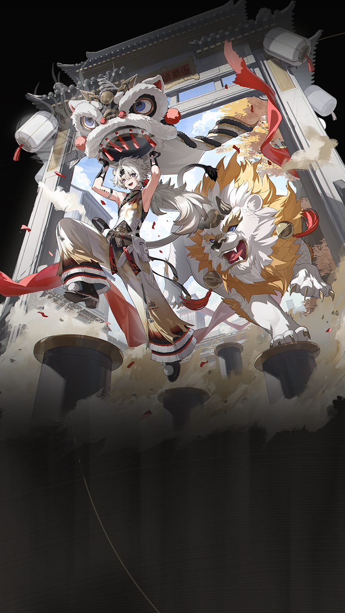
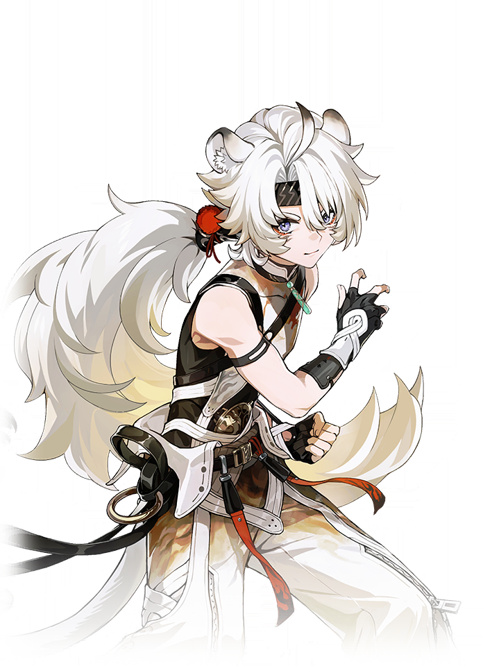
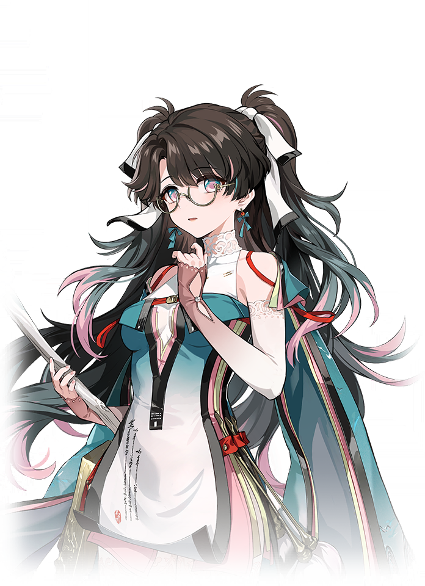

WaveKit
WaveKit

Wuthering Waves Resonator guide
Lingyang build, teams, weapons, and Echoes
Aerial Glacio carry. Fun but less relaxed.
Skill priority
Team compositions

Main damageLingyangTakes the main damage window
Setup helperZhezhiBuffs or utility setup Safety/supportShorekeeperHealing and mistake recovery
Safety/supportShorekeeperHealing and mistake recovery
Use Lingyang / Zhezhi / Shorekeeper when you want the clearest Lingyang direction and own the important partners.
 Setup helperSanhuaBuffs or utility setup
Setup helperSanhuaBuffs or utility setup Safety/supportVerinaHealing and mistake recovery
Safety/supportVerinaHealing and mistake recovery
Use this when the best team is missing a premium piece, but you still want a team that follows Lingyang's main plan.
 Setup helperLucillaSetup or off-field damage
Setup helperLucillaSetup or off-field damage Safety/supportBaizhiHealing and mistake recovery
Safety/supportBaizhiHealing and mistake recovery
Use this when you want a lower-stress version with more room for mistakes while learning fights.
New player reading guide
If you are only checking Lingyang before selecting your Resonators, read the best team as a target, not a requirement. Missing Zhezhi or Shorekeeper is normal; the team helper can turn your owned roster into a practical substitute.
Lingyang guide overview
Lingyang is a Glacio main dps in Wuthering Waves. This WaveKit guide focuses on the practical build choices most players need first: weapon options, Sonata and Echo setup, stat priority, simple rotation notes, and team shells that make sense for real accounts.
Quick build
- Role
- Main DPS
- Team type
- Glacio Basic
- Best weapon
- Abyss Surges
- Alternate weapons
- Verity's Handle / Stonard / Marcato
- Sonata
- Frosty Resolve
- Echo cost
- 4-3-3-1-1
- Main Echo
- Sentry Construct
- Main stats
- CRIT Rate or CRIT DMG / Glacio DMG / ATK%
Stat priority
- CRIT Rate / CRIT DMG balance
- Glacio DMG or ATK%
- ATK% or HP% if the kit scales that way
- Energy Regen only if the rotation needs it
Team direction
Lingyang likes Glacio or Basic Attack helpers, but comfort support should stay visible.
Useful teammates
Simple play pattern
- Set up both teammates before giving Lingyang the main damage window.
- Use the listed Sonata and main Echo as the first build target, then improve substats slowly.
- If the team feels stressful, use the helper to choose a real healer or safer third slot.
Build priority
- Difficulty
- Advanced
- Safety
- Bring a healer if learning
- Data note
- Guide checked
Lingyang can work well, but build priority depends heavily on your owned teammates and weapons.
Lingyang FAQ
What is the best Lingyang build in Wuthering Waves?
Lingyang's recommended WaveKit setup is Glacio DPS Build, using Abyss Surges, Frosty Resolve, and Sentry Construct as the main Echo target.
What stats should Lingyang use?
Start with CRIT Rate or CRIT DMG / Glacio DMG / ATK%. If the rotation feels uncomfortable, improve Energy Regen or defensive comfort before chasing perfect substats.
What teams work with Lingyang?
A strong reference shell is Lingyang / Zhezhi / Shorekeeper. WaveKit can also suggest owned alternatives through the team helper.
Is Lingyang beginner friendly?
Lingyang's current difficulty is listed as Advanced. If you are learning, pair them with safer sustain or defensive support.